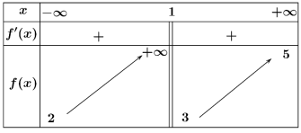
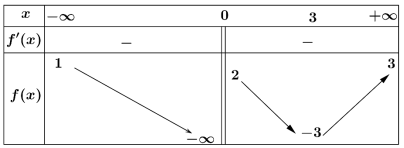
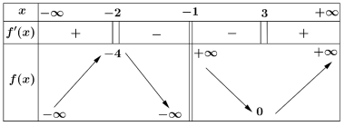
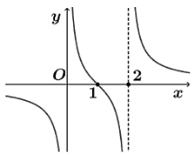

Thời gian làm bài: 90 phút
Lời giải Hàm số $y=\frac{x+3}{2x-1}$ có một tiệm cận đứng $x=\frac{1}{2}$ và một tiệm cận ngang $y=\frac{1}{2}$ Hàm số $y=\frac{{{x}^{2}}+3x-2}{x+3}=x-\frac{2}{x+3}$ có một tiệm cận đứng $x=-3$ và một tiệm cận xiên $y=x$. Hàm số $y=\frac{4}{x-1}$ có một tiệm cận đứng $x=1$ và một tiệm cận ngang $y=0$. Hàm số $y=\frac{2x}{{{x}^{2}}+1}$ có một tiệm cận ngang $y=0$.
Lời giải Hàm số $y=\frac{x+1}{2x+1}$ có tiệm cận ngang $y=\frac{1}{2}$. Hàm số $y=\frac{{{x}^{2}}+x+1}{1-2x}$ không có tiệm cận ngang. Hàm số $y=\frac{2x+1}{1-x}$ có tiệm cận ngang $y=-2$. Hàm số $y=\frac{3-{{x}^{2}}}{2{{x}^{2}}-3x+1}$ có tiệm cận ngang $y=-\frac{1}{2}\Leftrightarrow 2y+1=0$.
Lời giải Ta có $\underset{x\to \infty }{\mathop{\lim }}\,\frac{3}{x+3}=0$. Vậy $\left( \Delta \right)$$y=2x-1\Leftrightarrow 2x-y-1=0$ là tiệm cận xiên của đồ thị $\left( C \right)$. Khi đó: $$d\left( M,\Delta \right)=\frac{\left| 2.2+1-1 \right|}{\sqrt{4+1}}=\frac{4}{\sqrt{5}}.$$
Lời giải Ta có $m=0$ thì $y=\frac{6x-2}{x+2}$ có tiệm cận đứng và tiệm cận ngang. $m\ne 0\text{ th }\!\!\grave{\mathrm{i}}\!\!\text{ }y=mx+6-2m+\frac{4m-14}{x+2}\text{. }$ Nếu $4~m-14=0\Leftrightarrow m=\frac{7}{2}$ thì hàm số không có tiệm cận.
Lời giải Ta có $$\underset{x\to -{{1}^{+}}}{\mathop{\lim }}\,y=\underset{x\to -{{1}^{+}}}{\mathop{\lim }}\,\frac{2x-2}{x+1}=-\infty $$ và $$\underset{x\to -{{1}^{-}}}{\mathop{\lim }}\,y=\underset{x\to -{{1}^{-}}}{\mathop{\lim }}\,\frac{2x-2}{x+1}=+\infty $$ nên đường thẳng $x=-1$ là tiệm cận đứng của đồ thị hàm số.
Lời giải Dựa vào định nghĩa đường tiệm cận ngang của đồ thị hàm số
Lời giải Ta có $\underset{x\to \infty }{\mathop{\lim }}\,\frac{3}{m-x}=0$. Vậy $y=x+m$ là tiệm cận xiên của đồ thị hàm số đã cho. Để $M\left( 1;2 \right)$ nằm trên tiệm cận xiên thì $2=1+m\Leftrightarrow m=1$.

Lời giải Từ bảng biến thiên ta có: $\underset{x\to {{1}^{-}}}{\mathop{\lim }}\,y=+\infty $ nên đường thẳng $x=1$ là đường tiệm cận đứng của đồ thị hàm số $\underset{x\to -\infty }{\mathop{\lim }}\,y=2,\underset{x\to +\infty }{\mathop{\lim }}\,y=5$ nên đường thẳng $y=2$ và $y=5$ là các đường tiệm cận ngang của đồ thị hàm số Tổng số đường tiệm cận ngang và đường tiệm cận đứng của đồ thị hàm số đã cho là 3
Lời giải Ta có : $\underset{x\to +\infty }{\mathop{\lim }}\,y=\underset{x\to +\infty }{\mathop{\lim }}\,\frac{3x+1}{x-1}=3$ và $\underset{x\to -\infty }{\mathop{\lim }}\,y=\underset{x\to -\infty }{\mathop{\lim }}\,\frac{3x+1}{x-1}=3$ nên $y=3$ là tiệm cận ngang của đồ thị hàm số.

Lời giải Nhìn bảng biến thiên ta thấy x=0 hàm số không xác định nên $x=0$ là tiệm cận đứng của đồ thị hàm số $$\underset{x\to +\infty }{\mathop{\lim }}\,f\left( x \right)=3\Rightarrow y=3$$ là tiệm cận ngang của đồ thị hàm số $$\underset{x\to -\infty }{\mathop{\lim }}\,f\left( x \right)=1\Rightarrow y=1$$ là tiện cận ngang của đồ thị hàm số Vậy hàm số có 3 tiệm cận
Lời giải Gọi $T\left( x \right)$ (đơn vị USD) là tổng số tiền bao gồm cả chi phí ban đầu mà công ty phải chi trả khi sản xuất $x$ đồ chơi $A$ thì $T\left( x \right)=50\,000+5x$ Ta có: $\underset{x\to +\infty }{\mathop{\lim }}\,\frac{T\left( x \right)}{x}=\underset{x\to +\infty }{\mathop{\lim }}\,\left( \frac{50\,000}{x}+5 \right)=5$.
Lời giải Hàm số không có tiệm cận đứng khi $x=m$ là nghiệm của: $2{{x}^{2}}-3x+m=0$ tức là $2{{m}^{2}}-2m=0\Leftrightarrow \left[ \begin{array}{*{35}{l}} m=0\\ m=1\\\end{array} \right.$

Lời giải: Lời giảiSai: Hàm số không xác định tại $x=-1$Sai: Khi $\left\{ \begin{aligned} x\to +\infty \Rightarrow y\to +\infty\\ x\to -\infty \Rightarrow y\to -\infty\\ \end{aligned} \right.$ nên hàm số không có tiệm cận ngangSai: Hàm số có đúng một tiệm cận đứng là đường thẳng $x=-1$Sai: $\underset{x\to {{\left( -1 \right)}^{+}}}{\mathop{\lim }}\,y=+\infty $ nên hàm số không có giá trị lớn nhất trên $\mathbb{R}$
Lời giải: Lời giảiĐúng: Ta có $y=x-4+\frac{10}{x+2}$. $\underset{x\to -2}{\mathop{\lim }}\,y=\infty $ nên $x=-2$ là tiệm cận đứng của đồ thị hàm số. $\underset{x\to \infty }{\mathop{\lim }}\,\frac{10}{x+2}=0$ nên $y=x-4$ là tiệm cận xiên của đồ thị hàm số.Đúng: Giao điểm của hai tiệm cận thỏa mãn $\left\{ \begin{array}{*{35}{l}} x=-2\\ y=x-4\\\end{array}\Leftrightarrow \left\{ \begin{array}{*{35}{l}} x=-2\\ y=-6\\\end{array} \right. \right.$.Sai: Khoảng cách từ $O$ đến tiệm cận xiên bằng $\frac{4}{\sqrt{2}}$.Đúng: Mặt khác $-4=0-4$ nên $M$ nằm trên tiệm cận xiên.
Lời giải: Lời giải Hàm số xác định trên $\mathbb{R}\backslash \{1\}$.Đúng: Ta có $y=x+m+1+\frac{m}{x-1}$. Để đồ thị $\left( {{C}_{m}} \right)$ của hàm số có tiệm cận xiên thì $m\ne 0$. Với $m\ne 0,\left( {{C}_{m}} \right)$ có tiệm cận xiên $$y=x+m+1\left( {{\Delta }_{m}} \right)\text{ v }\!\!\grave{\mathrm{i}}\!\!\text{ }\underset{x\to \infty }{\mathop{\lim }}\,\left[ y-\left( x+m+1 \right) \right]=\underset{x\to \infty }{\mathop{\lim }}\,\frac{m}{x-1}=0.$$Đúng: Để $\left( {{\Delta }_{m}} \right)$ qua $M\left( 2,-5 \right)$ thì $-5=2+m+1\Leftrightarrow m=-8$ (thoả mãn)Sai: Gọi $$A$$ là giao điểm của ${{\Delta }_{m}}$ với $Ox$ suy ra$A\left( -m-1;0 \right)$ Gọi $B$ là giao điểm của ${{\Delta }_{m}}$ với $Oy$ suy ra $B\left( 0;m+1 \right)$. Suy ra: ${{S}_{\Delta OAB}}=\frac{1}{2}OA\cdot OB=\frac{1}{2}\left| -m-1 \right|\left| m+1 \right|=\frac{1}{2}{{\left( m+1 \right)}^{2}}$ Để ${{S}_{\Delta OAB}}=8\Leftrightarrow \frac{1}{2}{{\left( ~m+1 \right)}^{2}}=8\Leftrightarrow \left[ \begin{array}{*{35}{l}} m=-5\\ ~m=3\\\end{array} \right.$ (thỏa mãn $\left. m\ne 0 \right)$.Sai: Ta có với $m\ne 0,x=1$ là tiệm cận đứng vì $\underset{x\to 1}{\mathop{\lim }}\,y=\infty $ nên $y=x+m+1$ là tiệm cận xiên. Khi đó giao điểm của 2 tiệm cận là $I\left( 1;m+2 \right)$. Để $$I$$ nằm trên Parabol $y={{x}^{2}}+3$ thì $m+2=1+3\Leftrightarrow m=2$ (thoả mãn).

Lời giải: Lời giảiĐúng: Từ đồ thị ta thấy hàm số đã cho liên tục trên khoảng $\left( 0\,;\,2 \right)$Đúng: Từ đồ thị hàm số ta thấy hàm số đã cho nghịch biến trên khoảng $\left( 1\,;\,2 \right)$Đúng: Hàm số đã cho có đường tiệm cận ngangĐúng: Khoảng cách giữa hai đường tiệm cận đứng của đồ thị hàm số bằng $2$.
Lời giải: Lời giải Khi $x=50$ thì $C\left( 50 \right)=\frac{12.50}{100-50}=12$ (nghìn đô) Vậy chi phí để loại bỏ $50\,%$ chất gây ô nhiễm là $12$ nghìn đô.
Lời giải: Lời giải Ta có: $\underset{t\to +\infty }{\mathop{\lim }}\,\frac{40t}{{{t}^{2}}+10}=\underset{t\to +\infty }{\mathop{\lim }}\,\left( \frac{0,4}{{{t}^{1,2}}+1}+0,02 \right)=0,02\,\,\left( \frac{mg}{ml} \right)$.
Lời giải: Lời giải Hàm số đã cho xác định và liên tục trên $\left( -\infty ;-1 \right)\cup \left( -1;+\infty \right)$ $y=\frac{m{{x}^{2}}+\left( {{m}^{2}}+m+2 \right)x+{{m}^{2}}+3}{x+1}=mx+{{m}^{2}}+2+\frac{1}{x+1},x\ne -1$ Vì $\underset{x\to -\infty }{\mathop{\lim }}\,\frac{1}{x+1}=\underset{x\to +\infty }{\mathop{\lim }}\,\frac{1}{x+1}=0$ nên $\left( d \right):y=mx+{{m}^{2}}+2$ $\Leftrightarrow \left( d \right):mx-y+{{m}^{2}}+2=0$ là đường cận xiên hoặc ngang của hàm số. Ta có: $d\left( O;d \right)=\frac{\left| {{m}^{2}}+2 \right|}{\sqrt{\left| {{m}^{2}}+1 \right|}}=\sqrt{{{m}^{2}}+1}+\frac{1}{\sqrt{{{m}^{2}}+1}}\ge 2$ Vậy $d\left( O;d \right)$ nhỏ nhất bằng $2$ khi $\sqrt{{{m}^{2}}+1}=\frac{1}{\sqrt{{{m}^{2}}+1}}\Leftrightarrow m=0$. Khi đó hàm số có tiệm cận ngang là $y=2$.
Lời giải: Lời giải Với $m\ne 0$ ta có: $S=2\Leftrightarrow \left| \frac{1}{m} \right|.\left| \frac{2}{m} \right|=2\Leftrightarrow m=\pm 1$.
Lời giải: Lời giải Ta có: $Q\left( 0 \right)=\frac{64}{4-0}=16$(nghìn con).
Lời giải: Lời giải Ta có: $\underset{t\to +\infty }{\mathop{\lim }}\,\frac{40t}{{{t}^{2}}+10}=0$; $\underset{t\to +\infty }{\mathop{\lim }}\,\frac{-50}{t+1}=0$ suy ra $P\left( t \right)=70$. Vậy dân số mà anh An dự kiến trong dài hạn là $70$ nghìn người.
Vui lòng kéo lên trên để xem chi tiết lời giải từng câu hỏi.